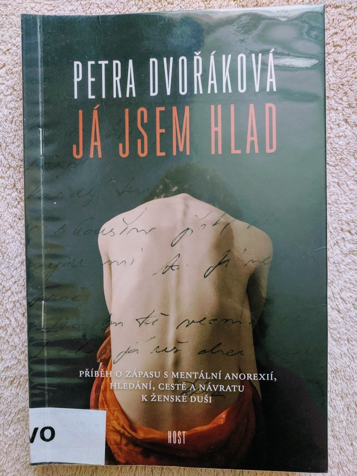
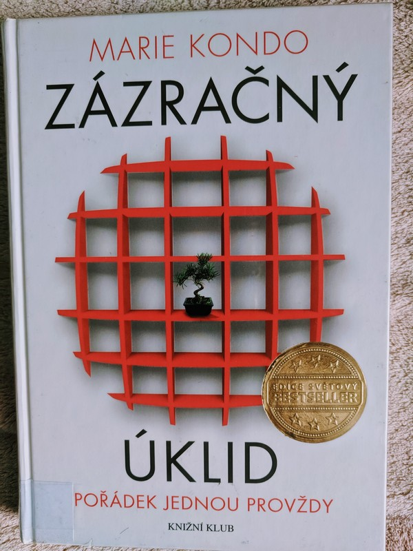
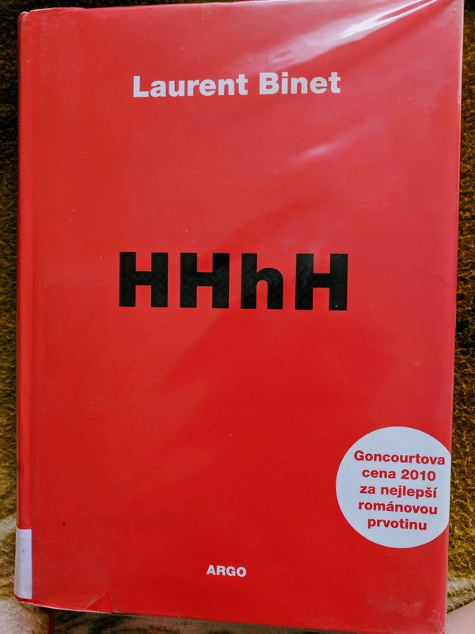
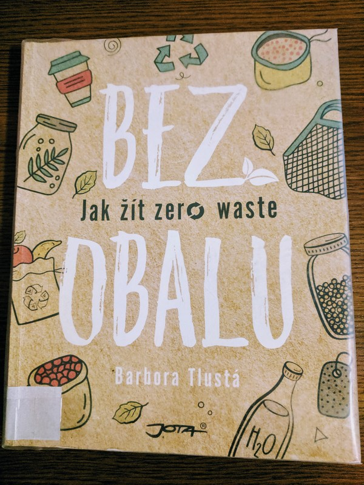
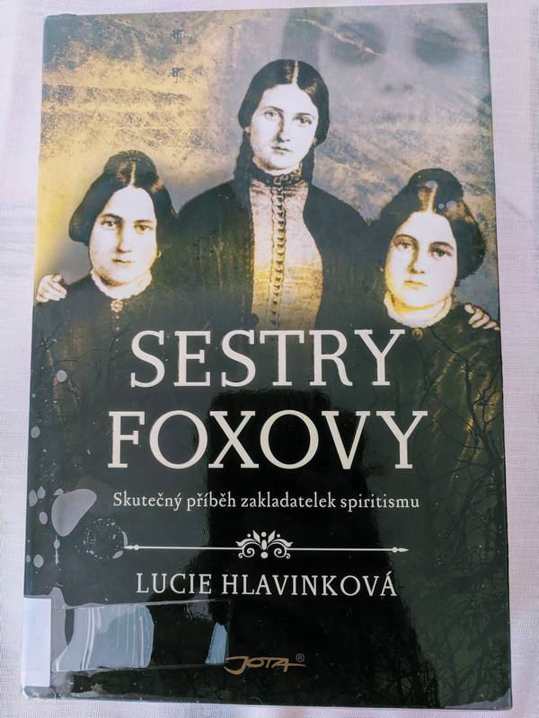
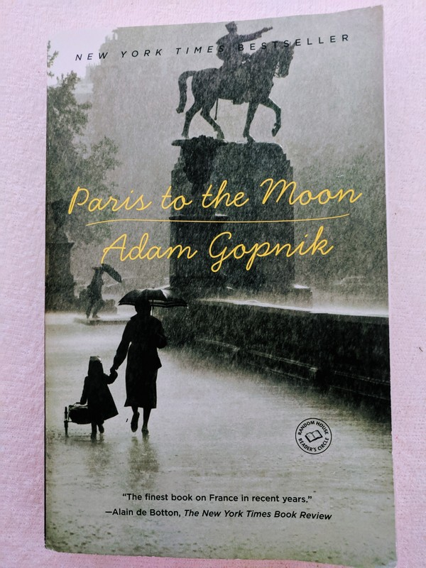
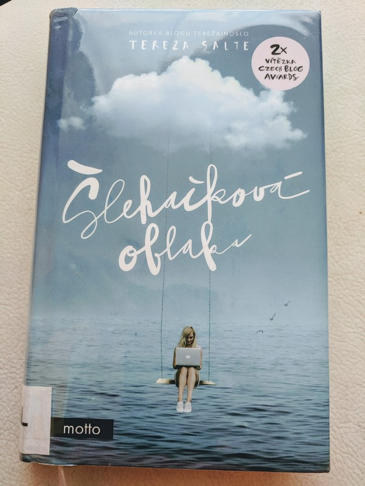

Je neuvěřitelné, jak rychle letos to léto uteklo. Ale stihli jsme toho víc než dost - báječnou dovolenou, spoustu výletů, setkání - a i na čtení se dostalo :-)
Petra Dvořáková - Já jsem hlad
Byť mě předchozí knížky Petry Dvořákové opravdu zaujaly, touto jsem zůstala z nějakého důvodu jaksi nedotčena, a to navzdory silnému tématu, kdy se autorka velmi otevřeně přiznává ke svému boji s mentální anorexií. Já osobně jsem z textu tak úplně nepochopila, co u ní vlastně nemoc odstartovalo - kniha nemá románový, vyprávěcí charakter, ale zaměřuje se spíš na popis autorčiných pocitů. To je na jednu stranu velmi neotřelý pohled, se kterým jsem se zatím v literatuře na toto téma nesetkala. Na druhou stranu jsem se ve všech těch pocitech občas dost ztrácela a moc nevěděla, co si z toho vlastně odnést. Já jsem hlad vnímám hlavně jako osobní terapii autorky a jsem pořád trochu v šoku z toho, že tak intimní zpověď vyšla knižně. Klobouk dolů před tou odvahou…

Marie Kondo - Zázračný úklid
Úklid je jedním z věčných témat života na mateřské :-D Ti, co mě znají, vědí, že už delší dobu koketuji s Terapií domova, která mi pomohla spoustu (převážně organizačních) záležitostí v naší domácnosti vylepšit. Metoda Marie Kondo je takovou nadstavbou, vyšším levelem, pokud to s reorganizací svého domova myslíte smrtelně vážně ;-) Ale taky to není metoda pro každého, to si řekněme na rovinu. Podstatou tohoto přístupu je (zjednodušeně) zbavit se všech věcí, které ve vás nevyvolávají příjemné pocity. Jsem člověk, na něhož vyhazování nepotřebností působí až ozdravně a sama jsem při čtení přehodnotila, zda má opravdu smysl nechávat si doma některé věci, na druhou stranu je to pro mě už prostě moc radikální. Taky se mi nelíbí, že autorka nabádá k vyhazování věcí, ale už vůbec neřeší ten aspekt, jak se nepotřebného zbavit nějak ekologicky. Zkrátka nesouzním se vším, co je v knize řečeno, přesto si myslím, že Zázračný úklid je “must-read” záležitost pro každého, kdo vážně uvažuje o větší reorganizaci svého domova a chce se vymanit ze zajetí nepotřebných krámů.

Laurent Binet - HHhH
Obrovským překvapením pro mne byl tento román zpracovávající téma z českých dějin - atentát na Heydricha - francouzským spisovatelem Laurentem Binetem. Z knihy je cítit jak autorův upřímný zápal pro tuto tragickou kapitolu naší historie, s nímž dává dohromady dílek po dílku ucelený obrázek o celé události, tak obrovská láska k České republice, kde několik let žil. Pokud vás téma zajímá, Binetova informačně přínosná rekonstrukce vás zcela jistě obohatí i několika fakty, o nichž jste možná dosud neslyšeli.

Barbora Tlustá - Bez obalu (Jak žít zero waste)
Brněnský bezobalový obchůdek FriendlyPlace mám v hledáčku už téměř rok, ale teprve nedávno jsem se tam konečně vypravila nakoupit - mimochodem naprosto úžasný stáčený repelent “Lesa pán” na naši šumavskou expedici. Zhruba ve stejné době se mi také dostala do rukou tato kniha, která pochází z pera zakladatelky FriendlyPlace, Barbory Tlusté. Je plná skvělých a inspirativních tipů na udržitelnější chování ve všech možných aspektech života a ač jsem v otázkách zero waste a udržitelnosti velmi nenásilná, určité své zažité zvyky se přecejen po krůčcích snažím měnit k lepšímu. Pokud se o toto téma také začínáte zajímat, kniha Bez obalu je skvělým odrazovým můstkem, který můžu jen doporučit!

Lucie Hlavinková - Sestry Foxovy (Skutečný příběh zakladatelek spiritismu)
Přiznám se, že tato knížka pro mě byla celkem zklamáním a dočetla jsem ji asi jen z nedostatku lepší literatury na dovolené. “Duchařské” téma je přitom plné potenciálu na fantastický román (navíc podle skutečné události), jen to zpracování nějak pokulhává. Charaktery jednotlivých postav mi přijdou málo propracované a tudíž i krajně nesympatické. Byť je to celé vlastně velice tragická story, příběh sester Foxových se mě nijak výrazněji nedotkl ani ve mně nic nezanechal. Škoda toho potenciálu!

Adam Gopnik - Paris to the Moon
Nikdy by mě nenapadlo, že zrovna na mateřské přečtu tolik leta nedotčených knížek v angličtině. Možná je to přecejen někdy trochu dovolená ;-) Byl to i případ této knihy esejů amerického novináře Adama Gopnika, kterou jsem dostala od bráchy k Vánocům před bezmála osmi lety. Adam Gopnik prožil druhou polovinu 90.let se svou ženou a malým synem v Paříži a právě o této své životní etapě, o odlišnostech americké a francouzské mentality, ale tak trochu i o různých kapitolách rodičovství, vypráví v Paris to the Moon - souboru esejí, kterými přispíval Gopnik do magazínu The New Yorker. Po stránce jazykové to bylo trochu náročnější čtení než třeba v případě Paula Austera, ale příběhu jsem přesto většinou porozuměla i bez většího vyhledávání slovíček.

Tereza Salte - Šlehačková oblaka
Terezu jsem “objevila” v jednomu z dílů Deep talks Petra Ludwiga a vlastně teprve díky ní jsem podlehla fenoménu podcastů a začala ji poslouchat při nekonečných procházkách s kočárkem. Má opravdu příjemný hlas a navíc podobně staré dítě :-) Že vydala knihu jsem zjistila až později, ale s radostí jsem po ní sáhla hned, jak jsem ji objevila v knihovně. Šlehačková oblaka jsou spíš takovou víkendovou oddechovkou, určitě nečekejte nějakou hlubokou literaturu. Pro mě byla spíš zajímavá z toho hlediska, že jsem se o autorce dozvěděla něco víc, než co na sebe dosud “práskla” ve svých podcastech. Terezin životní příběh je každopádně inspirující a stejně jako u jejích podcastů i u knížky Šlehačková oblaka se dá skvěle vypnout a relaxovat :)
